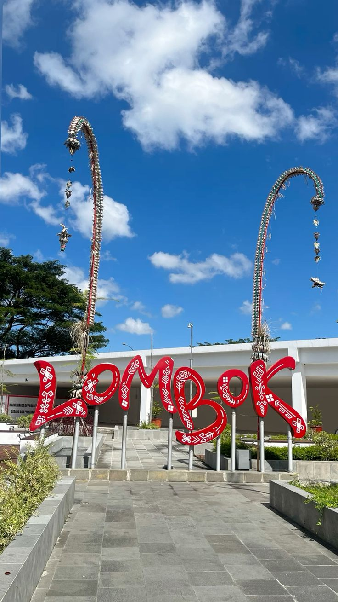
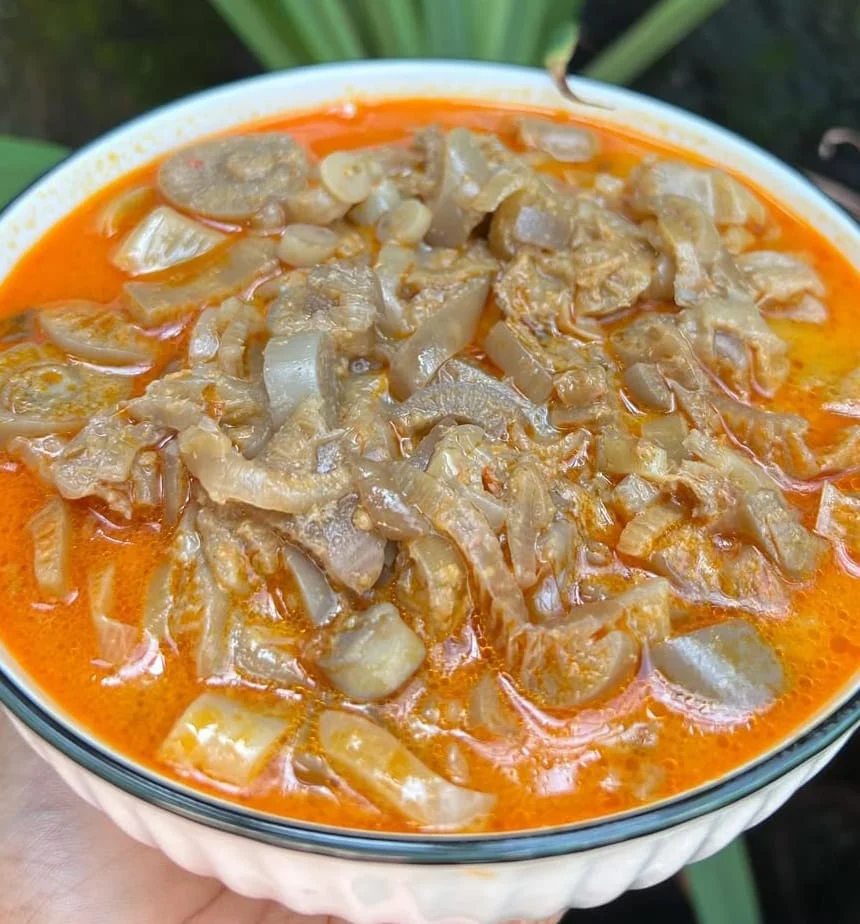

About Lombok
Lombok adalah pulau yang berada di provinsi Nusa Tenggara Barat yang terkenal dengan keindahan alam, pantai, dan budaya Suku Sasak. Lombok menawarkan berbagai macam pantai yang indah dengan berpasir putih, air laut yang jernih, terumbu karang yang indah, serta pulau-pulau yang disebut Gili.
Selain itu, Lombok juga memiliki Gunung Rinjani yang merupakan gunung aktif tertinggi kedua di Indonesia. Gunung Rinjani memiliki ketinggian 3.726 meter di atas permukaan laut (mdpl).
Keindahan Lombok juga dilengkapi dengan budaya Suku Sasak, desa-desa adat, kain tenun tradisional, dan makanan tradisional yang memiliki rasa rempah yang kaya, gurih, dan pedas.
Traditional Food
Makanan khas Suku Sasak memiliki cita rasa yang kuat dengan banyak menggunakan rempah-rempah. Beberapa makanan khas Lombok antara lain:

Plecing Kangkung
Kangkung yang disajikan dengan sambal tomat yang pedas dan segar.

Ares
Makanan khas Lombok yang dibuat dari batang pisang muda dan dimasak dengan bumbu khas.

Sate Rembiga
Sate daging sapi dengan bumbu yang gurih, pedas, dan kaya akan rempah.

Sate Bulayak
Sate yang biasanya disajikan bersama bulayak, yaitu lontong khas Lombok yang dibungkus dengan daun.
.jpg)
Nasi Balap Puyung
Nasi dengan lauk ayam suwir, kacang kedelai, dan sambal yang memiliki rasa pedas dan gurih.
Budaya Lombok
Lombok tidak hanya terkenal karena pantai dan keindahan alamnya, tetapi juga karena budaya Suku Sasak yang masih dijaga sampai sekarang. Budaya tersebut dapat dilihat melalui rumah adat, desa tradisional, kain tenun, musik, tarian, serta berbagai tradisi yang dilakukan oleh masyarakat Lombok.

Suku Sasak
Suku Sasak merupakan suku asli dan kelompok etnis utama yang tinggal di Pulau Lombok. Kebudayaan Suku Sasak diwariskan secara turun-temurun dan dapat dilihat dari bahasa, pakaian, rumah adat, kesenian, serta berbagai tradisi masyarakatnya.

Desa Tradisional
Salah satu tempat untuk melihat kehidupan tradisional Suku Sasak adalah Desa Sade. Desa ini masih mempertahankan rumah tradisional, kebiasaan, dan berbagai kegiatan masyarakat Sasak. Pengunjung juga dapat melihat proses pembuatan kain tenun tradisional.

Kain Tenun Sasak
Kain tenun merupakan salah satu bagian penting dari budaya Suku Sasak. Kain ini dibuat secara tradisional dengan menggunakan alat tenun dan memiliki berbagai macam motif. Kain tenun biasanya digunakan sebagai pakaian tradisional atau dalam acara-acara tertentu.

Gendang Beleq
Gendang Beleq merupakan kesenian musik tradisional Suku Sasak yang menggunakan gendang berukuran besar. Kesenian ini biasanya dimainkan secara berkelompok dalam acara adat, pernikahan, dan berbagai acara penting lainnya.

Peresean
Peresean merupakan salah satu kesenian tradisional Suku Sasak. Dalam pertunjukannya, dua orang peserta menggunakan tongkat rotan dan perisai. Peresean sekarang juga sering ditampilkan sebagai salah satu cara untuk memperkenalkan budaya Lombok kepada wisatawan.

Bau Nyale
Bau Nyale merupakan tradisi masyarakat Lombok untuk menangkap nyale, yaitu hewan laut yang bentuknya seperti cacing. Tradisi ini berkaitan dengan legenda Putri Mandalika dan biasanya dilakukan sekitar bulan Februari atau Maret.
The Gili Islands
Di sekitar Lombok terdapat pulau-pulau kecil yang disebut Gili. Tiga Gili yang paling terkenal adalah Gili Trawangan, Gili Meno, dan Gili Air. Ketiga pulau ini tidak menggunakan mobil atau sepeda motor berbahan bakar fosil. Wisatawan biasanya berjalan kaki, menyewa sepeda, atau menggunakan kereta kuda tradisional yang disebut cidomo.

1. Gili Trawangan
Gili Trawangan adalah pulau terbesar dan paling ramai di antara tiga Gili utama. Pulau ini terkenal dengan suasana yang meriah, banyak restoran, penginapan, serta tempat penyewaan alat snorkeling.
Wisatawan juga dapat bersepeda mengelilingi pulau, menikmati sunset, atau bersantai di pantai. Gili Trawangan sering dianggap cocok bagi wisatawan yang menyukai aktivitas sosial dan hiburan malam.
Meskipun ramai, pulau ini tetap memiliki pantai yang indah dan lokasi snorkeling untuk melihat ikan tropis serta penyu. Luasnya sekitar 3 kilometer panjang dan 2 kilometer lebar. Pulau ini juga memiliki bukit kecil yang dapat digunakan untuk melihat pemandangan laut.

2. Gili Meno
Gili Meno adalah pulau terkecil dan paling sepi di antara tiga Gili utama. Pulau ini sering disebut sebagai "pulau bulan madu" karena suasananya yang tenang, pantai pasir putih yang bersih, dan air laut yang jernih.
Gili Meno cocok bagi wisatawan yang ingin bersantai jauh dari keramaian dan menikmati keindahan alam. Di tengah pulau terdapat danau asin yang dikelilingi hutan bakau.
Di perairan sekitarnya juga dapat ditemukan penyu hijau dan penyu sisik. Salah satu lokasi snorkeling yang terkenal adalah patung bawah laut "Nest". Luasnya sekitar 2 kilometer panjang dan 1 kilometer lebar.

3. Gili Air
Gili Air menjadi salah satu pulau yang menarik untuk snorkeling dan menyelam. Pulau ini cukup tenang, tetapi tetap memiliki berbagai macam restoran, penginapan, tempat menyelam, dan kegiatan wisata lainnya.
Gili Air memiliki suasana yang berada di antara Gili Trawangan dan Gili Meno. Karena memiliki keseimbangan antara ketenangan dan fasilitas, Gili Air cocok bagi wisatawan yang ingin bersantai tanpa merasa jauh dari kegiatan wisata.
Activities in the Three Gili
Selain menikmati pantai dan snorkeling, wisatawan di ketiga Gili juga dapat melakukan berbagai aktivitas seperti:
- Island hopping menggunakan perahu kecil
- Diving di lokasi-lokasi terkenal
- Menyewa sepeda untuk mengelilingi pulau
- Snorkeling dan melihat ikan serta penyu
- Bersantai dan menikmati sunset
Tidak adanya kendaraan bermotor di ketiga Gili membuat suasananya lebih tenang dan juga ramah lingkungan.